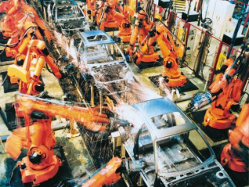

WHAT IS A ROBOT?

The dictionary meaning of a robot is a machine capable of carrying out a complex series of actions automatically, expecially one programmable by computer.
This explanation is accurate but i think that it doesnt give us the complete picture.
There is different kinds of robots. I am going to make a classification here but we can do this different ways.
Pre-programmed Robot
Pre-programmed robots operate in a simple, controlled environment so that they do not require a great deal in the way of intelligence control systems to operate successfully. The most familiar pre-programmed robots are problably the robots used to build cars in most automobile plants around the world. There are similar robots that operate not on cars, but on the human body.
Autonomus Robots
Autonomous tobots operate independently of human operators in environments that are not as tightly controlled as pre-programmed robots. They have "autonomy" because it is ultimatley the machines responsibilty to detect changes in the environment and to adapt to it. When operating properly it is not necessary for humans to constantly monitor and manipulate the environment to accommodate limitations in the robots ability to cope. Autonomous robots are used in industry, as laborsaving devices at home, and are even becoming popular toys.
Teleoperated Robots

Teleoperated robots are controlled remotely by human being. The underwater robots that helped fix the oil leak in the Gulf of Mexico were teleoperated. The roboticarm on the space shuttle is another example. There are many such examples with the number and kind of robots growing with each passing year. Special emphasis will be given to the use of such robots in the medical field. It is now possible for your physician to be tele-present in your home town, even if she is on a trip to China for an ezample.
Augmenting Robots
Some robots are connected directly to the human users body, either by the user gripping the controls in their hand or by having it in contact with the users body in some other way. Movements of the users body (sometimes it is only the mental activity of the users brain) ultimately control a robotic effoctor of some kind. These robots can either enhance the users natural skill in some way or give them a skill they don2t have or have lost. These robots can give humans the lifting power of giants and the dexterity of a virtuoso surgeon.
|